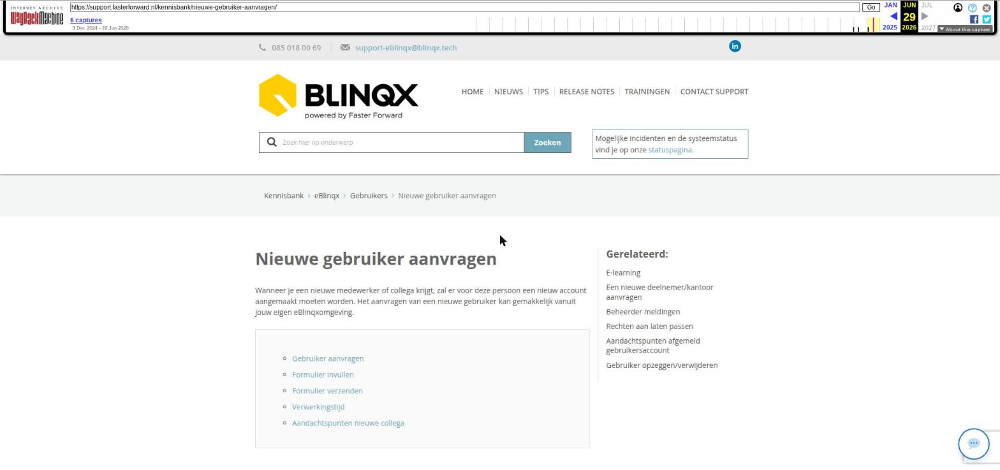

Nieuwe gebruiker aanvragen

Tekstinhoud
Nieuwe gebruiker aanvragen
Wanneer je een nieuwe medewerker of collega krijgt, zal er voor deze persoon een nieuw account aangemaakt moeten worden. Het aanvragen van een nieuwe gebruiker kan gemakkelijk vanuit jouw eigen eBlinqxomgeving.
Gebruiker aanvragen
Formulier invullen
Formulier verzenden
Verwerkingstijd
Aandachtspunten nieuwe collega
Gebruiker aanvragen
Het aanvragen van het gebruikersaccount kan via de module Gebruikersaccounts – Overzicht mits je de interne beheerder/mutatiebevoegde bent. Ben je bij ons bekend als mutatiebevoegde, maar zie je de knoppen niet? Stuur dan een e-mail naar support-eblinqx@blinqx.tech.
Formulier invullen
Om een gebruiker aan te vragen, klik je in Gebruikersaccounts – Overzicht op de knop 'Nieuwe gebruiker aanvragen'.
Er verschijnt vervolgens een formulier die je kunt invullen. De gele velden zijn verplicht.
Zodra je één van de vragen op het antwoord 'Ja' zet, verschijnt er een extra veld waar je de betreffende informatie in kan zetten.
Formulier verzenden
Als je het formulier volledig en correct hebt ingevuld, verstuur je het formulier via de knop 'Versturen'. Het formulier wordt als e-mail verzonden naar onze supportafdeling waar we het verzoek verder in behandeling nemen. Er wordt een ticket van gemaakt en je ontvangt hiervan een bevestiging per e-mail.
De e-mail met daarin het formulier wordt verzonden vanuit de e-mailbox die als standaard e-mailbox staat ingesteld onder jouw account. Deze e-mailbox kan je terugvinden en instellen via het poppetje rechts bovenin – Mijn Instellingen. Het verzonden formulier is in deze e-mailbox terug te vinden in de map Verzonden.
Indien de standaard e-mailbox niet staat ingesteld dan verschijnt er een foutmelding die je erop wijst dat deze niet staat ingesteld met daarin een link waar je de standaard e-mailbox kan instellen.
Verwerkingstijd
Nieuwe gebruikers worden binnen drie werkdagen aangemaakt.
Aandachtspunten nieuwe collega
Er zijn nog een aantal zaken die wij niet standaard inrichten voor een nieuw gebruikersaccount. Er zijn nog een aantal stappen die jouw nieuwe collega of jij als beheerder zelf kunt nemen nadat het gebruikersaccount is aangemaakt. Hier lees je er meer over.
Laatste update: 15 oktober 2025
Tagged: collega
Was deze informatie nuttig?
Ja Nee